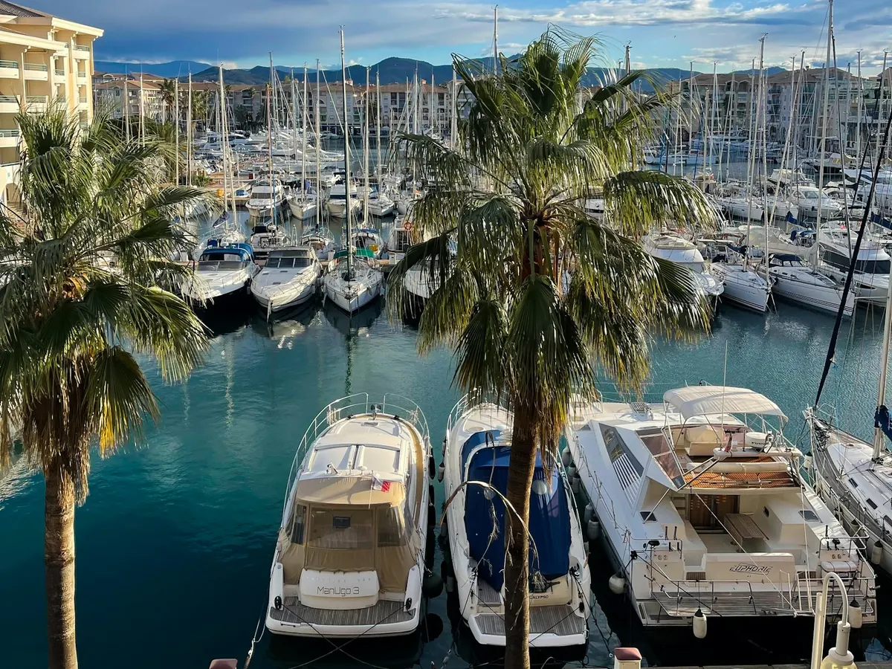
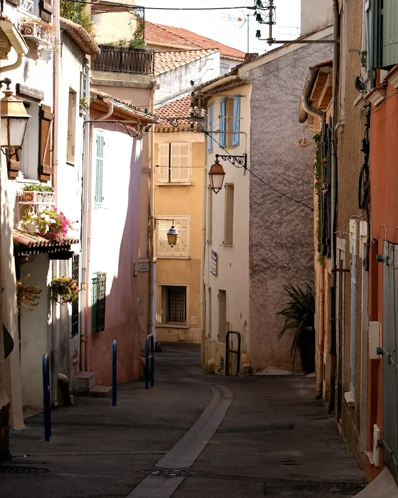
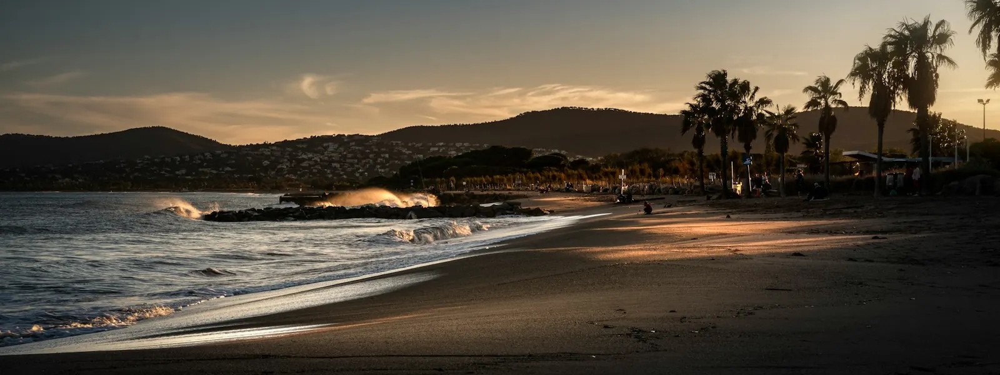

Dépannage informatique à Fréjus, Saint-Raphaël et dans le pays de Fayence
À moins d'une heure de Nice, nous intervenons dans l'est du Var sur rendez-vous, et à distance chaque jour : particuliers, résidences secondaires, commerces et entreprises de Fréjus, Saint-Raphaël, Fayence, Montauroux et des communes voisines.


Proches de vous, même à une heure de Nice
Fréjus et Saint-Raphaël sont à moins d'une heure de notre base niçoise. Pour vous garantir un service rapide malgré la distance, nous combinons trois modes d'intervention.
- Télé-assistance immédiate pour les problèmes logiciels, virus, e-mails et réglages
- Rendez-vous sur place planifiés et regroupés par secteur
- Suivi à distance des parcs informatiques sous contrat
Communes desservies dans l'est du Var
De la côte de l'Estérel au pays de Fayence. D'autres communes proches ? Appelez-nous, nous étudions chaque demande.

- Saint-Raphaël
- Boulouris
- Agay
- Fréjus
- Saint-Aygulf
- Puget-sur-Argens
- Les Adrets-de-l'Estérel
- Bagnols-en-Forêt
- Fayence
- Tourrettes
- Montauroux
- Callian
- Tanneron
- Saint-Paul-en-Forêt
Nos services informatiques à Fréjus et Saint-Raphaël
Particuliers et professionnels de l'est Var : voici les interventions que l'on nous demande le plus souvent.
Pour les particuliers
Résidences secondaires et locations saisonnières
Saint-Raphaël, Agay, Fréjus-Plage ou Saint-Aygulf comptent de nombreuses résidences secondaires et locations saisonnières. Une box qui se dérègle entre deux séjours ou un Wi-Fi qui ne couvre pas la terrasse suffisent à gâcher des vacances ou à valoir un mauvais avis à un loueur.
Nous préparons les installations avant la saison, créons un réseau dédié aux locataires et restons joignables à distance tout l'été. Les déplacements sur place sont planifiés sur rendez-vous.
- Box, Wi-Fi et TV vérifiés avant la saison
- Réseau invité séparé pour les locataires
- Assistance à distance pendant les séjours
Fréjus et Saint-Raphaël : vos questions
Comment fonctionnent les interventions dans le Var ?
Nous sommes basés à Nice, à moins d'une heure. Nous intervenons sur rendez-vous, en regroupant les déplacements d'un même secteur, et réglons à distance tout ce qui peut l'être, souvent le jour même.
Proposez-vous des contrats de maintenance aux entreprises varoises ?
Oui. Grâce à la supervision et au helpdesk à distance, nous suivons votre parc au quotidien, et nous nous déplaçons pour les interventions sur site prévues au contrat.
Intervenez-vous dans le pays de Fayence ?
Oui : Fayence, Tourrettes, Montauroux, Callian, Tanneron et Saint-Paul-en-Forêt font partie de notre zone, sur rendez-vous.
Pouvez-vous préparer le Wi-Fi d'une location saisonnière ?
Oui. Nous configurons un réseau dédié à vos locataires, séparé du vôtre, et intervenons à distance pendant la saison si besoin.
La télé-assistance suffit-elle dans la plupart des cas ?
Pour les problèmes logiciels, les virus, les e-mails ou les réglages, oui : une prise en main sécurisée à distance règle la majorité des demandes, souvent le jour même. Nous nous déplaçons pour le matériel et les installations.
Nous intervenons aussi près de chez vous

Un besoin informatique dans le Var ?
Télé-assistance immédiate et rendez-vous sur place, de Saint-Raphaël à Fayence.